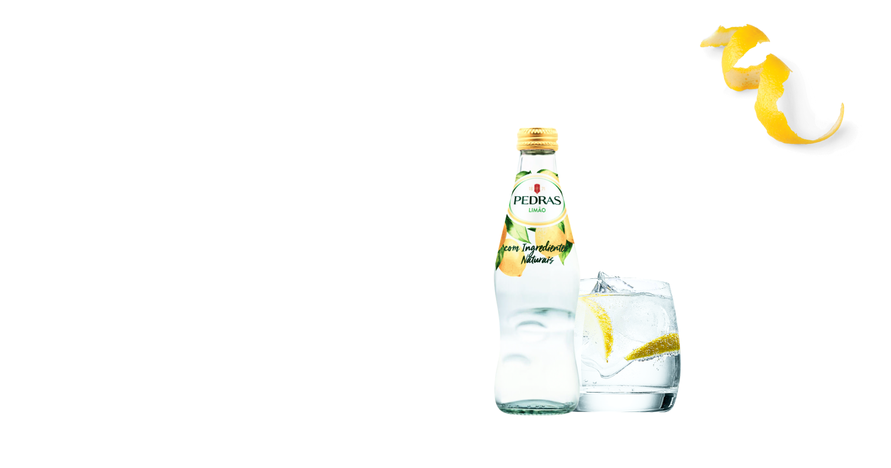

The water takes about ten
years to cross the different
layers of granite that filter it
and enrich it with mineral
salts, endowing it with the
properties that make it into
the market leader of
Portugal's sparkling waters.
sweet
refresh-
ing.lemon
flavor

The secret of Pedras
Lemon is at the origin
of the natural product
Lemon is at the origin
of the natural product
